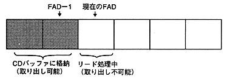

* When playback ends, FAD = playback end position + 1.
(This is also true when the playback end position is at the disc end, and FAD indicates the lead-out area.)
The repeat notification count (0H to EH) and the maximum specified count (0H to FH) are both expressed in 4 bits.
The repeat processing procedure (with / without repeat) is shown below.
(a) Repeat count ＜ Maximum repeat count. S Seek to the start position and enter the 〈PLAY〉 state. At that time, if the number of repeats ＜ EH (14 times), increase the number of repeats by one.(B) No repeat if repeat count ≥ maximum repeat count. The 〈PAUSE〉 state is entered at the current position, and the PEND flag in the interrupt factor register is set to 1.
If the playback range or maximum repeat count is changed, the repeat count is cleared to zero.
The number of repeats and the playback range do not depend on the opening / closing of the tray or the seek operation during playback.